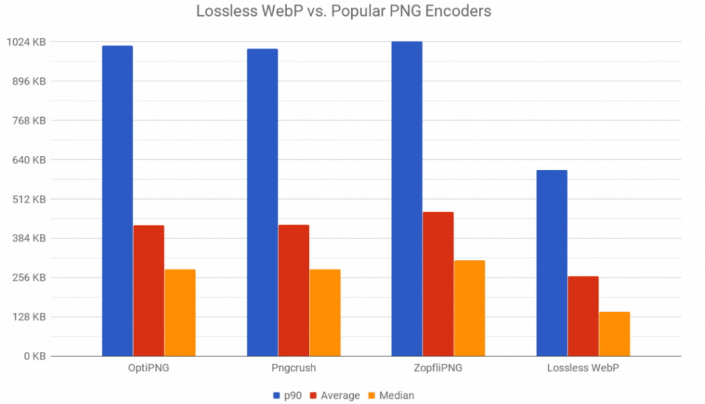
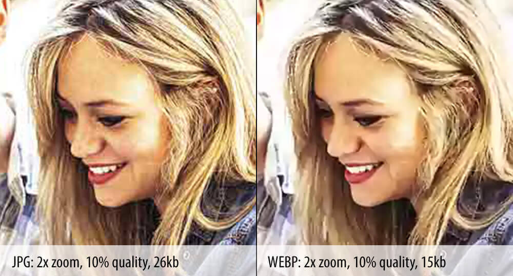
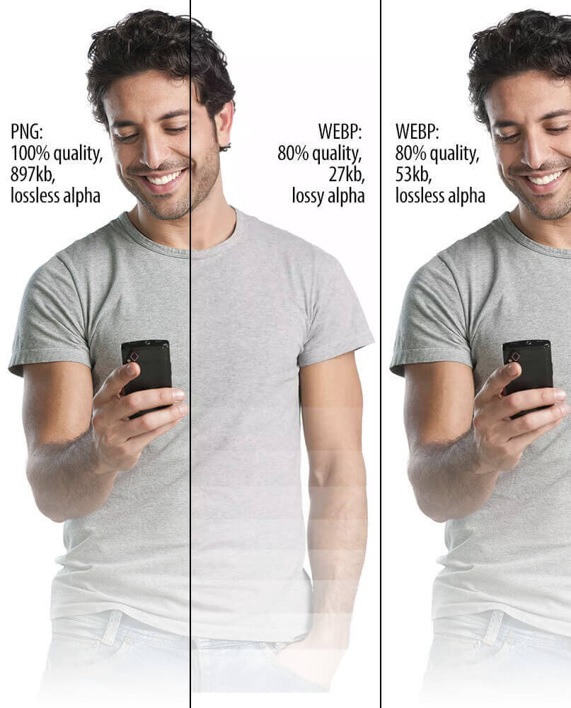

WebP — это формат файла, разработанный компанией Google в 2010 году. Его особенностью является продвинутый алгоритм сжатия, позволяющий сократить размер картинки без видимых потерь в качестве.
Да, другие форматы тоже поддерживают сжатие, но технологии, стоящие в основе WebP, куда прогрессивнее. И если сравнивать WebP с конкурентами в соотношении степени сжатия к качеству картинки, то разработка Google одержит уверенную победу.
В среднем вес картинок сокращается на 25–35%, что позволяет вебмастерам размещать на сайтах больше изображений, не тратя впустую драгоценное пространство на жестком диске арендованного VDS.
При разработке формата сотрудники Google использовали те же методики сжатия, что используются в компрессии кодеков VP8.
Естественно, основное преимущество — это размер. Сокращение размера положительно влияет сразу на четыре аспекта работы в интернете:
Но говорить о преимуществах WebP проще в сравнении с другими форматами.
JPEG — формат, отлично подходящий для изображений с большим количеством цветов. Он мало весит и имеет приемлемое качество, из-за чего обрел столь большую популярность среди пользователей.
Главный недостаток JPEG — заметная потеря в качестве и детализации из-за недостаточно продуманных алгоритмов сжатия. Это особенно заметно при приближении или когда у картинки изначально не слишком высокое разрешение.
У WebP качество картинки практически не теряется. Если ознакомиться с Галерея WebP Google>, то станет понятно, что отличить их формат от высококачественных JPEG практически невозможно. Это видно только по размеру файлов.
PNG — формат, ставший золотым стандартом и сумевший сохранить идеальный баланс между качеством и весом. Он подходит для изображений с логотипами или некрупным текстом. Там, где нужна высокая детализация.
Но речь идет о графике. С фотоснимками PNG справляется хуже более узкоспециализированных расширений. К тому же PNG заметно тяжелее того же JPEG даже после компрессии (хоть и сохраняет высокое качество).

WebP по детализации и цветопередачи на одном уровне с PNG. Разницу трудно заметить даже при сравнении лоб в лоб. Он хорошо отображает как графику, так и фотографии. При этом размер зачастую ниже, чем у PNG, на 30%.
Хотя GIF-файлы отлично подходят для анимации шуток, в наши дни они не очень хороши. Анимированные GIF-файлы в Twitter больше не являются даже GIF-файлами! Это файлы WebM.
Потому что правда в том, что GIF никогда не были предназначены для анимации. Они создают исключительно большие размеры файлов. Чем больше кадров, тем хуже становится. Если вы переключитесь на файл WebM, у вас будет файл, который будет в 9 раз меньше и намного качественнее . MP4 — еще одна жизнеспособная опция, совместимая со всеми браузерами.
GIF-файлы имеют ограниченную цветовую палитру из 256 цветов и используют сжатие без потерь. Но так же, как и файлы PNG-8, и с гораздо меньшим размером файла, и они также имеют прозрачность.
Так что, возможно, единственный вариант использования GIF — это когда вы пытаетесь создать что-то, совместимое со старыми браузерами, которые не поддерживают HTML 5, выглядят плохо или специально для ностальгического эффекта .
Поддержка данного формата среди браузеров и веб-приложений постепенно растет. Сейчас с WebP не возникает проблем ни в Google Chrome, ни даже в Safari. Но остались сайты и программы, которые все еще не знакомы с этим расширением картинок. Поддержка в браузере Apple появилась не так давно, а в Internet Explorer не появится никогда.
Как я уже заметил выше, проблема не только в браузерах, но и в других программных решениях. К примеру, в WordPress нет нативной поддержки WebP, а это, между прочим, популярнейшая CMS в мире. И таких ресурсов все еще много.
А еще WebP-файлы зачастую нечем открывать на компьютере. Поэтому некоторые пользователи Windows и Linux негодуют, когда пытаются скачать картинку через Google Chrome, а получают файл с невнятным расширением, который нельзя открыть.

